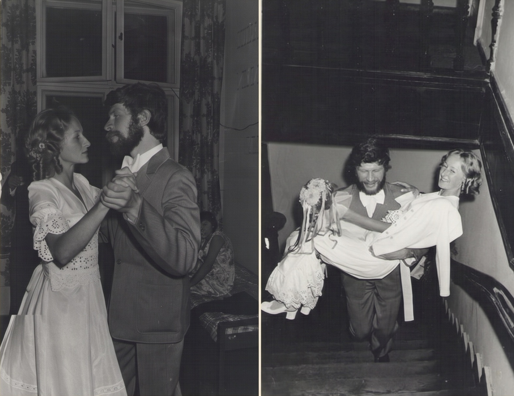
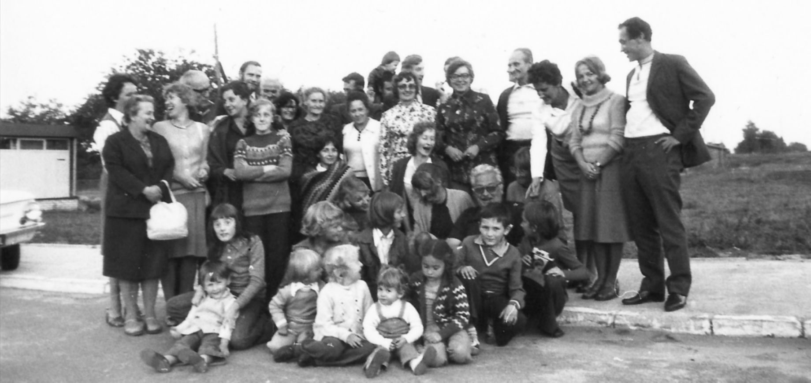

Jak nieformalnie powołano do życia Klan Ładomirskich i Kraińskich
Była polska złota jesień, dzień 28 września roku 1974. W Wielichowie, w Wielkopolsce, na ślubnym kobiercu, w kościele pw. św. Marii Magdaleny, stanęli: Maria Ładomirska, panna lat 24 i Marek Szczepaniak, kawaler lat 26. Po zaślubinach Młodzi oraz zaproszeni goście udali się do Pałacu IUNGu. Tamże wieczorem odbyło się huczne wesele.

Młoda para — Wielichowo 1974Moi rodzice, Jerzy i Marta z Ładomirskich małżonkowie Niewęgłowscy o mały włos na powyższe uroczystości by nie dotarli...
Dlaczego to istotne?
Otóż tak się złożyło, że ojciec mój, w rodzinie oraz wśród koleżeństwa po fachu rybackim zwany Jackiem, był świeżo po lekturze artykułu o zjazdach rodzinnych organizowanych przez cieszyński ród Guziurów...
Narodziny Klanu
Równo rok później, we wrześniu 1975 roku w Modlinie, odbył się I Zjazd Rodziny Ładomirskich. Przybyli nań potomkowie Zdzisława i Anny z Kraińskich małżonków Ładomirskich...

Uczestnicy I Zjazdu w ModlinieSłownik języka polskiego
KLAN — (1) związek osób oparty na pokrewieństwie bądź powinowactwie; (2) grupa osób popierających się, mających wspólne interesy, w jakiś sposób związanych ze sobą.